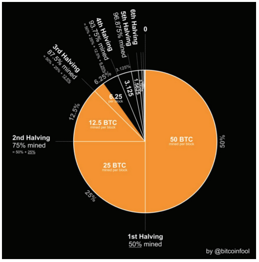

Şimdiye Kadar Yazılmış En Basit Bitcoin Kitabı
"Eğer 3, 6 ve 9'un muhteşemliğini bilseydiniz, evrenin anahtarına
sahip olurdunuz."
~ Nikola Tesla
BLOK ÖDÜLÜ = ARZ YÜZDESİ
Blok sübvansiyonu (yeni kazılan her blok için ödüllendirilen
bitcoin sayısı), o dönemde kazılacak
toplam arzın yüzdesini
temsil eder.
Örneğin, 2024-2028 yılları arasındaki mevcut blok ödülü
3.125
bitcoin'dir.
Bu aynı dört yıl içinde, 21 milyon bitcoin'in
%3.125
'i kazılacaktır.

Kaynak:
@bitcoinfool